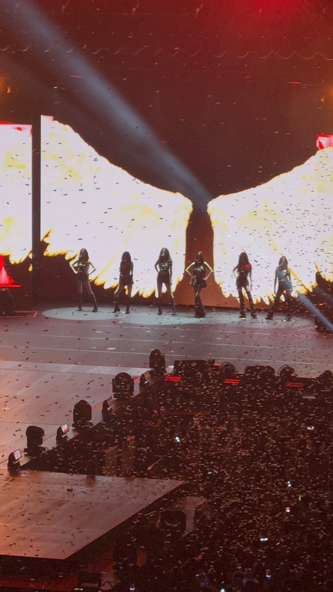
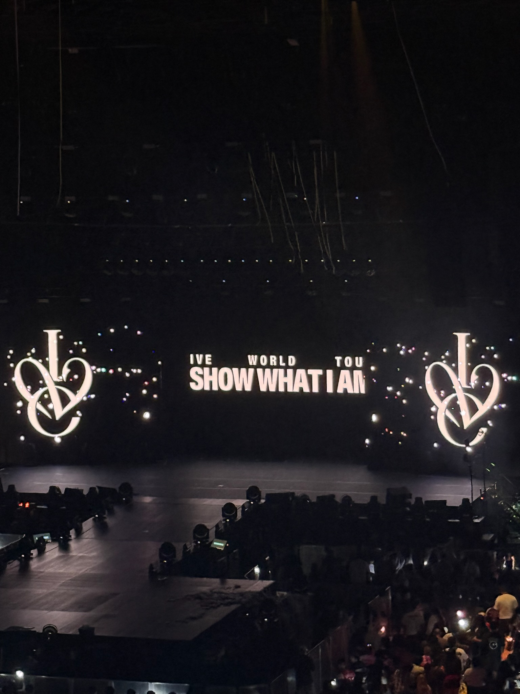
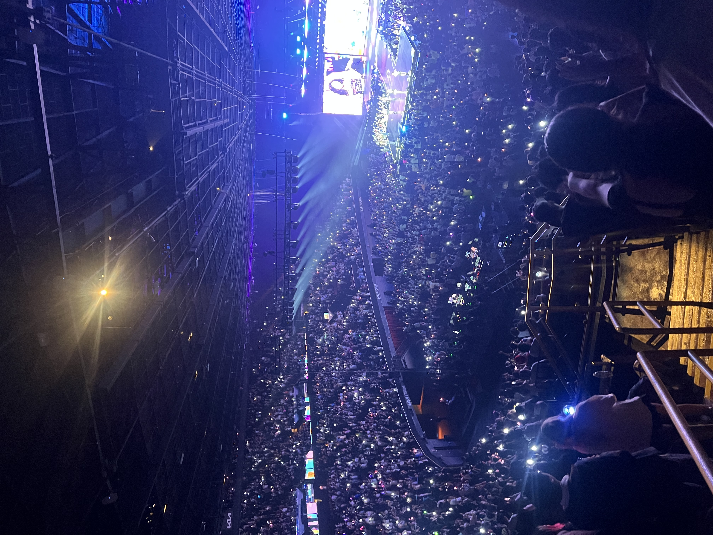
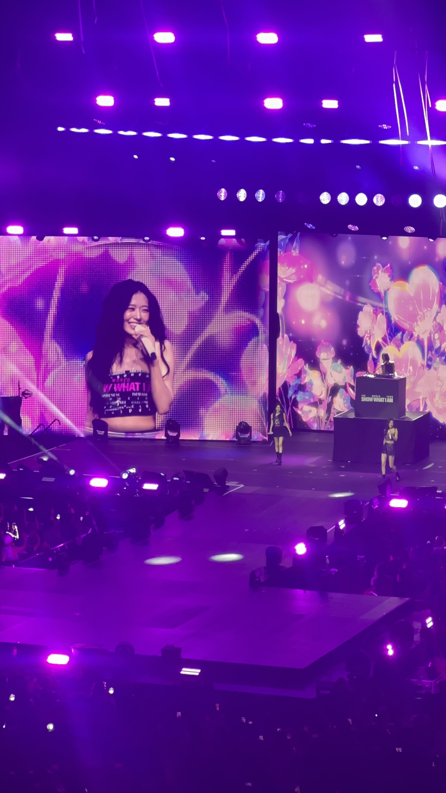
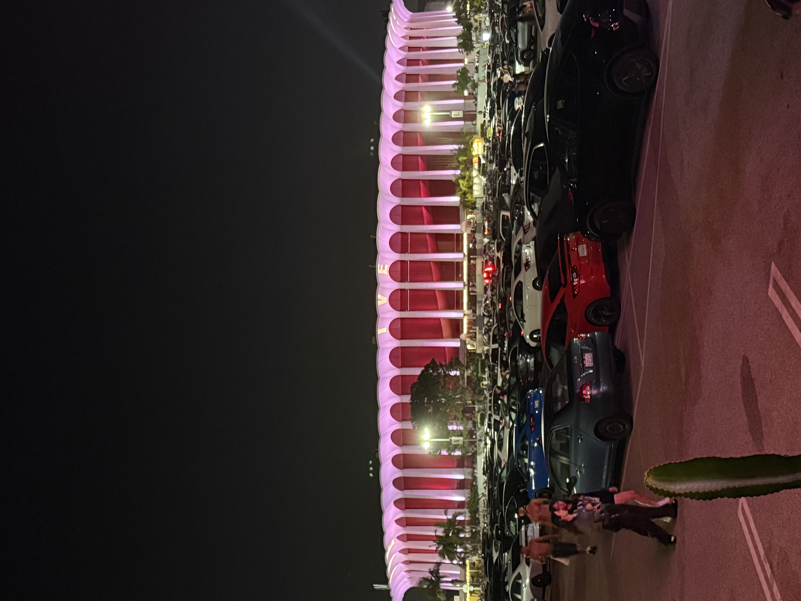

IVE @ Kia Forum 8/1/26
Section 203 Row 9 Seat 1
Rating: 8.8/10
This concert was amaizng! After the NMIXX concert, I thought I peaked in life, but this changed everything. Here is the breakdown:
Artist Performance and Vocals: 10/10
Their stage presence was AMAZING. Their dance, energy, vocals, and everything else was through the roof.
Set List: 8.5/10
Amazing setlist, Revive+ was my favorite K-Pop Album this year! Just missed Accendio and HEYA from IVE Switch rather than Ice Queen
Audio and Lighting Quality: 9.5/10
I thought that since the venue was bigger than YT Theater the audio would be worse, but I was so wrong. The audio was incredibly loud and clear, the lighitng and effects were amazing. The background screen behind IVE, however, was a little bit off.
Audience:7/10
This is probably just a personal issue, but my friend and I had aisle seats, and for some reason, everyone in my row had to get up EVERY COUPLE OF MINUTES LIKE SIT DOWN!! Anyways, besides tht the audience as a whole was so hype, but no one could match my screamming :)
Venue: 9/10
Kia Forum did NOT disappoint. I loved walking around the Terrace before the concert started, and entrance was much smoother than NMIXX. Just took us FOREVER to leave... and parking was so expensive
Concert Photos

IVE Members on Stage

Stage Background with Tour Name

Lit Audience!!

Yujin My Bias!!

Kia Forum Venue with Group Name
Concert Clips
IVE Performing Rebel Heart